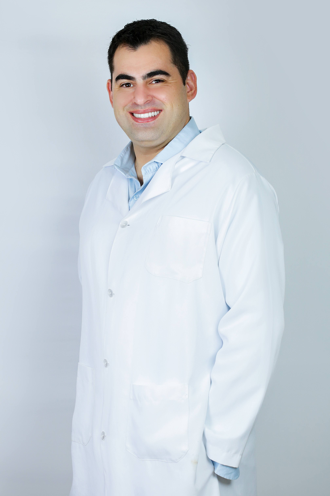
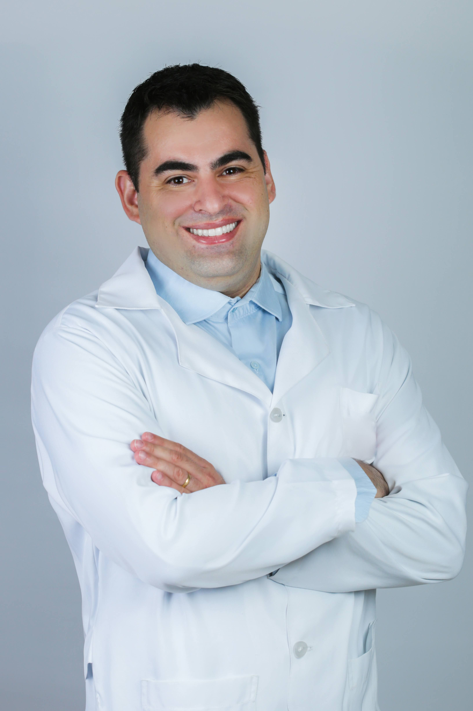

01
Dor persistente
Abordagem para dor lombar, cervical, ciática e quadros que limitam a rotina.
- Educação em dor
- Controle de carga
- Retorno gradual às atividades
Atendimento individualizado com Marco Salvanhini para dor, reabilitação, prevenção e retorno seguro às atividades.

A FEMIC trabalha com avaliação cuidadosa, explicação clara do quadro e progressão terapêutica conforme a resposta do paciente. A proposta é unir conhecimento técnico, escuta e acompanhamento contínuo.
O atendimento é conduzido por Marco Salvanhini, com foco em fisioterapia musculoesquelética, dor persistente, prevenção e reabilitação funcional.
Os tratamentos são estruturados conforme o diagnóstico funcional, intensidade da dor, rotina e objetivos de cada paciente.
Abordagem para dor lombar, cervical, ciática e quadros que limitam a rotina.
Recuperação após lesões, cirurgias, imobilizações e períodos de redução de movimento.
Avaliação e acompanhamento para evitar dores, melhorar função e sustentar resultados.
Do primeiro contato à alta, a ideia é transformar incerteza em clareza e movimento em resultado.
Entendimento da história, sintomas, rotina e objetivos.
Orientação clara sobre o que está acontecendo e o que evitar.
Condutas e exercícios ajustados à evolução do paciente.
Progressão para atividades do dia a dia, trabalho, esporte e lazer.
Os guias agora fazem parte do site público, com busca por condição, região do corpo e materiais educativos.
Guias com linguagem clara sobre dor lombar, cervicalgia, ciatalgia, ombro, joelho, pé, tornozelo e orientações gerais. Ideal para complementar o atendimento e ajudar o paciente a entender seu tratamento.
Abrir página de guiasAgende sua avaliação online. Preencha seus dados e entraremos em contato para confirmar o melhor horário.
Agendar avaliação